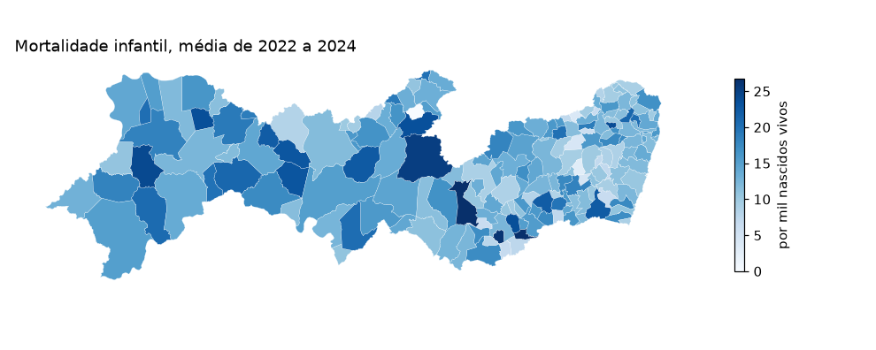
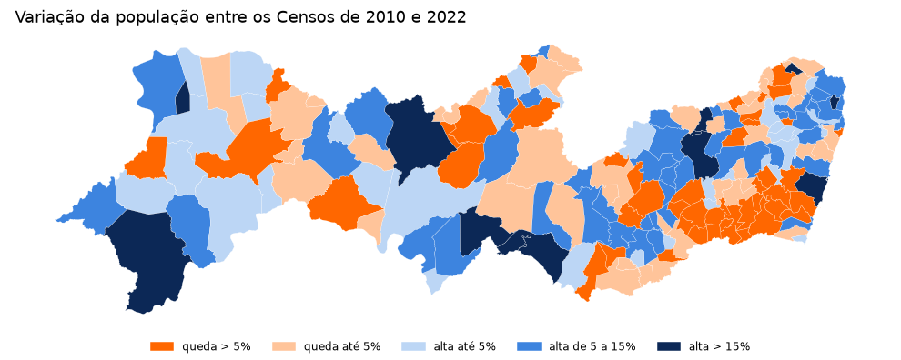
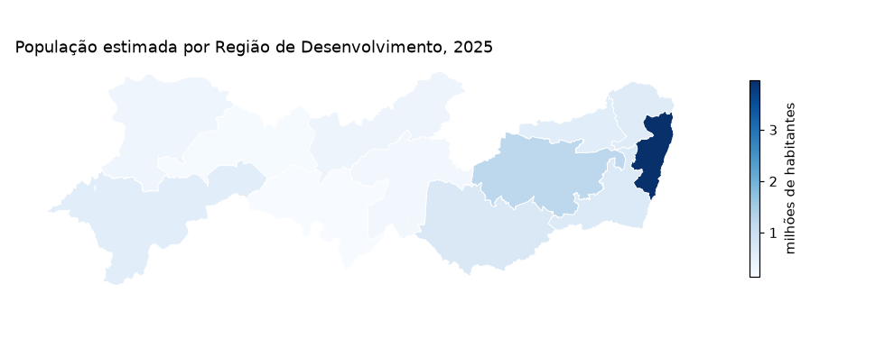
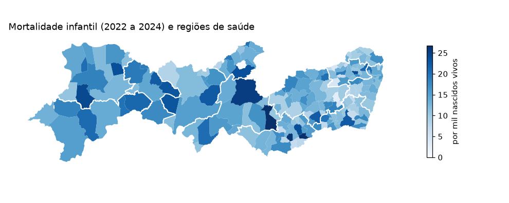
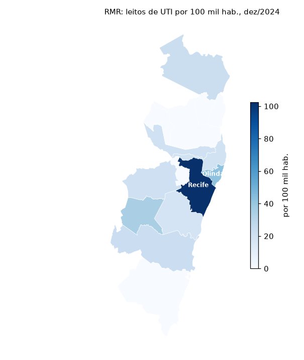
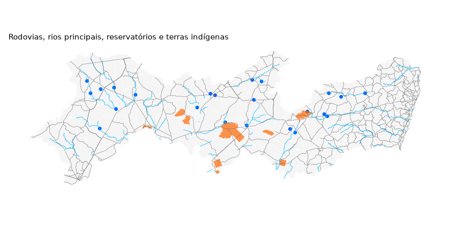

Mapas¶
Toda observação do Observatório traz o código IBGE do município
(cd_municipio_ibge), e isso basta para juntar os dados a uma malha
municipal e fazer mapas. O pacote traz a malha (condepe_geometry()),
a junção (condepe_add_geometry()) e as regionalizações do estado
(condepe_regions()). As funções de malha usam geopandas, que é
opcional; os gráficos usam matplotlib:
pip install "condepe[geo]" matplotlib
A malha municipal¶
condepe_geometry() baixa a Malha Municipal de Pernambuco publicada
pela Condepe/Fidem (a edição corrente, conferida pelo SHA-256 e
guardada em cache). Com source="ibge", a malha vem da API de malhas
do IBGE. Fernando de Noronha (2605459) fica a 545 km da costa e, num
mapa do estado inteiro, espreme o continente para a esquerda; os mapas
abaixo o deixam de fora com noronha=False:
malha = condepe.condepe_geometry(noronha=False)
print(len(malha), "municípios; edição", malha.attrs["version"], ";", malha.crs)
malha.head(3)
184 municípios; edição 2025-v3 ; EPSG:4326
cd_municipio_ibge nm_municipio geometry
0 2600054 Abreu e Lima POLYGON ((-34.9148 -7.9276, -34.91576 -7.927...
1 2600104 Afogados da Ingazeira POLYGON ((-37.52795 -7.73721, -37.52758 -7.7...
2 2600203 Afrânio POLYGON ((-40.76417 -8.62047, -40.76398 -8.6...
Mortalidade infantil¶
A taxa é ruidosa nos municípios pequenos (poucos nascimentos por ano); a média de três anos é mais estável:
tmi = condepe.condepe_series(
"datasus_mortalidade_infantil",
"Taxa de mortalidade infantil (por mil nascidos vivos)",
years=[2022, 2023, 2024],
)
media = tmi.groupby("cd_municipio_ibge", as_index=False)["valor"].mean()
mapa = condepe.condepe_add_geometry(media, geometry=malha)
ax = mapa.plot(column="valor", cmap="Blues", edgecolor="white", linewidth=0.15,
legend=True, figsize=(9, 3.6),
legend_kwds={"label": "por mil nascidos vivos", "shrink": 0.6},
missing_kwds={"color": "lightgrey"})
ax.set_axis_off()
ax.set_title("Mortalidade infantil, média de 2022 a 2024", loc="left")
print(fig("mapa_tmi"))

Variação da população entre os Censos¶
Para uma variação, que tem sinal, classes com cores divergentes deixam claro quem cresceu e quem encolheu. População dos Censos de 2010 e 2022 (as estimativas anuais não cobrem anos de Censo):
pop = condepe.condepe_series(
"sidra_censo_cor_raca", "IBGE - População residente - Total", years=[2010, 2022]
)
w = pop.pivot(index="cd_municipio_ibge", columns="ano", values="valor")
w["var"] = 100 * (w[2022] / w[2010] - 1)
rotulos = ["queda > 5%", "queda até 5%", "alta até 5%", "alta de 5 a 15%", "alta > 15%"]
w["classe"] = pd.cut(w["var"], [-1e9, -5, 0, 5, 15, 1e9], labels=rotulos)
mapa = condepe.condepe_add_geometry(w.reset_index(), geometry=malha)
cores = dict(zip(rotulos, ["#ff6700", "#ffc49a", "#bcd6f5", "#3d84df", "#0c2856"]))
ax = mapa.plot(color=mapa["classe"].map(cores).astype(str), edgecolor="white",
linewidth=0.15, figsize=(9, 3.6))
from matplotlib.patches import Patch
ax.legend(handles=[Patch(color=c, label=r) for r, c in cores.items()],
loc="lower center", ncol=5, frameon=False, fontsize=8,
bbox_to_anchor=(0.5, -0.12))
ax.set_axis_off()
ax.set_title("Variação da população entre os Censos de 2010 e 2022", loc="left")
print(fig("mapa_populacao"))
mapa["classe"].value_counts().sort_index()
classe
queda > 5% 48
queda até 5% 43
alta até 5% 34
alta de 5 a 15% 47
alta > 15% 12
Name: count, dtype: int64

Regiões¶
`condepe_regions()` diz a que região pertence cada município em onze
regionalizações: Regiões de Desenvolvimento (RD) da Condepe/Fidem,
meso e microrregiões e regiões imediatas e intermediárias do IBGE,
regiões e macrorregiões de saúde, Gerências Regionais de Educação
(GRE), regiões fiscais da SEFAZ, Diretorias Regionais de Operações (DRO) do DER e regiões
metropolitanas. A tabela é
publicada pelo Observatório junto com os dados abertos
(referencia/regioes.parquet) e lida de lá com cache, como as fontes;
sem rede, vale a cópia que vai com o pacote (offline=True força essa):
reg = condepe.condepe_regions()
reg["rd"].value_counts()
rd
Agreste Central 27
Agreste Meridional 26
Mata Sul 23
Mata Norte 19
Agreste Setentrional 19
Sertão do Pajeú 17
Região Metropolitana do Recife 14
Sertão do Araripe 10
Sertão Central 8
Sertão do São Francisco 7
Sertão do Moxotó 7
Sertão de Itaparica 7
Distrito Estadual 1
Name: count, dtype: int64
Para mapear uma região, agregue os dados numa coluna regiao e passe
level a condepe_add_geometry(): a malha municipal é dissolvida na
regionalização pedida, com as mesmas divisas. População estimada de
2025 por Região de Desenvolvimento:
pop = condepe.condepe_series("sidra_populacao_estimada",
"Populacao residente estimada", years=2025)
pop = pop.merge(condepe.condepe_regions("rd")[["cd_municipio_ibge", "regiao"]])
por_rd = pop.groupby("regiao", as_index=False)["valor"].sum()
mapa = condepe.condepe_add_geometry(por_rd, level="rd", noronha=False)
ax = mapa.plot(column=mapa["valor"] / 1e6, cmap="Blues", edgecolor="white",
linewidth=0.6, legend=True, figsize=(9, 3.6),
legend_kwds={"label": "milhões de habitantes", "shrink": 0.6})
ax.set_axis_off()
ax.set_title("População estimada por Região de Desenvolvimento, 2025", loc="left")
print(fig("mapa_rd"))
por_rd.sort_values("valor", ascending=False)
regiao valor
6 Região Metropolitana do Recife 3961730.0
0 Agreste Central 1214544.0
1 Agreste Meridional 702044.0
5 Mata Sul 671469.0
4 Mata Norte 610969.0
12 Sertão do São Francisco 569327.0
2 Agreste Setentrional 567121.0
11 Sertão do Pajeú 345392.0
9 Sertão do Araripe 336359.0
10 Sertão do Moxotó 251957.0
7 Sertão Central 184722.0
8 Sertão de Itaparica 143032.0
3 Distrito Estadual 3341.0

Os contornos das regiões também servem de camada sobre um mapa municipal: a mortalidade infantil por município e, por cima, as doze regiões de saúde (as Geres):
geres = condepe.condepe_geometry("regiao_saude", noronha=False)
ax = condepe.condepe_add_geometry(media, geometry=malha).plot(
column="valor", cmap="Blues", legend=True, figsize=(9, 3.6),
legend_kwds={"label": "por mil nascidos vivos", "shrink": 0.6},
missing_kwds={"color": "lightgrey"})
geres.boundary.plot(ax=ax, color="white", linewidth=1.1)
ax.set_axis_off()
ax.set_title("Mortalidade infantil (2022 a 2024) e regiões de saúde", loc="left")
print(fig("mapa_saude"))

Região Metropolitana do Recife¶
Para ver um recorte, filtre a malha antes de desenhar. Os 15 municípios da RMR (Goiana entrou em 2018) e os leitos de UTI por 100 mil habitantes em dezembro de 2024; município sem leito no CNES conta como zero leitos de UTI:
reg_rm = condepe.condepe_regions("rm")
rmr = reg_rm.loc[reg_rm["regiao"] == "Região Metropolitana do Recife",
"cd_municipio_ibge"].tolist()
uti = condepe.condepe_series("datasus_leitos", "Leitos de UTI - Total",
code=rmr, years=2024)
pop = condepe.condepe_series("sidra_populacao_estimada", "Populacao residente estimada",
code=rmr, years=2024)
d = pop[["cd_municipio_ibge", "nm_municipio", "valor"]].merge(
uti[["cd_municipio_ibge", "valor"]], on="cd_municipio_ibge",
how="left", suffixes=("_pop", "_uti")).fillna({"valor_uti": 0})
d["por_100mil"] = 1e5 * d["valor_uti"] / d["valor_pop"]
mapa = condepe.condepe_add_geometry(d, geometry=malha, how="inner")
ax = mapa.plot(column="por_100mil", cmap="Blues", edgecolor="white", linewidth=0.4,
legend=True, figsize=(5.5, 6.5),
legend_kwds={"label": "por 100 mil hab.", "shrink": 0.5})
for _, r in mapa[mapa["por_100mil"] >= 40].iterrows(): # nm_municipio vem da malha
p = r.geometry.representative_point()
ax.annotate(r["nm_municipio"], (p.x, p.y), ha="center", fontsize=8,
color="white", weight="bold")
ax.set_axis_off()
ax.set_title("RMR: leitos de UTI por 100 mil hab., dez/2024", loc="left", fontsize=10)
print(fig("mapa_rmr"))
d.sort_values("por_100mil", ascending=False)[["nm_municipio", "valor_uti", "por_100mil"]].round(1)
nm_municipio valor_uti por_100mil
13 Recife 1627.0 102.5
11 Olinda 155.0 42.4
10 Moreno 20.0 34.7
4 Goiana 20.0 23.5
2 Cabo de Santo Agostinho 50.0 23.0
14 São Lourenço da Mata 25.0 21.2
0 Abreu e Lima 22.0 21.2
12 Paulista 72.0 19.8
9 Jaboatão dos Guararapes 124.0 18.1
1 Araçoiaba 0.0 0.0
3 Camaragibe 0.0 0.0
5 Igarassu 0.0 0.0
6 Ipojuca 0.0 0.0
7 Ilha de Itamaracá 0.0 0.0
8 Itapissuma 0.0 0.0

Os leitos concentram-se no Recife, que atende pacientes de toda a região: o indicador mede oferta no município, não acesso de quem mora nele.
Camadas geográficas¶
Além da malha, o Observatório publica camadas de referência em
GeoParquet, e o pacote as lê como GeoDataFrame em WGS 84: a malha
rodoviária do DER-PE (condepe_roads(), por tipo de trecho), a
hidrografia da ANA (condepe_hydrography(): rios, rios principais,
massas d'água, reservatórios acompanhados e unidades de planejamento)
e qualquer outra camada do catálogo (condepe_layer(), como as
terras indígenas da FUNAI). Sobrepostas à malha municipal:
rodovias = condepe.condepe_roads(type=["estaduais", "federais"])
rios = condepe.condepe_hydrography("rios_principais")
reservatorios = condepe.condepe_hydrography("reservatorios")
ti = condepe.condepe_layer("terras_indigenas")
# As camadas cobrem o Estado inteiro, Noronha inclusive; recorte ao continente
xmin, ymin, xmax, ymax = malha.total_bounds
recorte = lambda g: g.cx[xmin:xmax, ymin:ymax] # noqa: E731
ax = malha.plot(color="#f5f5f5", edgecolor="white", linewidth=0.3, figsize=(8, 4.2))
recorte(rios).plot(ax=ax, color="#00B7FF", linewidth=0.5)
recorte(rodovias).plot(ax=ax, color="#666666", linewidth=0.35)
recorte(reservatorios).plot(ax=ax, color="#0068FF", markersize=14)
recorte(ti).plot(ax=ax, color="#FF6700", alpha=0.7)
ax.set_axis_off()
ax.set_title("Rodovias, rios principais, reservatórios e terras indígenas",
loc="left", fontsize=10)
print(fig("mapa_camadas"))
{"trechos": len(rodovias), "rios": len(rios), "reservatorios": len(reservatorios),
"terras_indigenas": len(ti)}
{'trechos': 814, 'rios': 965, 'reservatorios': 23, 'terras_indigenas': 16}

As camadas vêm no mesmo CRS da malha, então geopandas.overlay() e
sjoin() resolvem perguntas como "quantos quilômetros de rodovia
estadual cruzam cada município" — é assim que o Observatório calcula
as fontes derivadas der_malha_rodoviaria e ana_hidrografia.